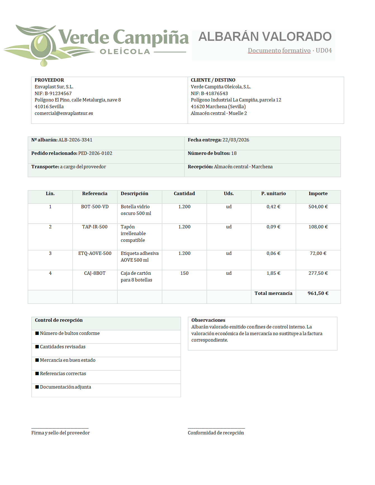

6.2- Albarán
Caso práctico
En Verde Campiña Oleícola, S.L., el albarán resulta fundamental para revisar si las botellas, tapones, etiquetas o cajas de cartón entregadas coinciden con las cantidades pedidas, si han llegado en buen estado y si la documentación es correcta.
Miguel recibe en el almacén un envío de 150 cajas de cartón y 1.200 botellas para la campaña de envasado. En el albarán aparecen 18 bultos. Antes de firmar la recepción, comprueba que han llegado todos los paquetes, que las cantidades coinciden con el pedido y que no existen daños visibles en la mercancía. Además, revisa si el documento recibido es un albarán valorado o sin valorar, ya que eso condiciona la información económica que puede comprobar en ese momento.
¿Qué información suele aparecer en un albarán? 
{kind=link}
¿Qué es el albarán y para qué sirve?
El albarán es el documento que acompaña a la mercancía cuando llega a la empresa. Su función principal es dejar constancia de lo que el proveedor entrega y permitir que la empresa compruebe si la recepción coincide con lo solicitado en el pedido.
- datos del proveedor y del cliente
- número y fecha del albarán
- referencia del pedido, si consta
- descripción de los productos entregados
- cantidades recibidas
- número de bultos
- observaciones sobre la entrega
- firma o conformidad, si procede
¿Qué debe comprobarse cuando llega un albarán?
- que el proveedor sea el correcto
- que la fecha de entrega sea la prevista o cercana a ella
- que las referencias coincidan con las del pedido
- que las cantidades entregadas se ajusten a lo solicitado
- que el número de bultos sea correcto
- que la mercancía llegue en buen estado
- que cualquier incidencia quede anotada antes de firmar la recepción
Idea clave: el albarán sirve para comprobar la entrega real de la mercancía. Permite verificar productos, cantidades, número de bultos y posibles incidencias antes de aceptar definitivamente la recepción.
Debes conocer
¿Por qué es importante el número de bultos?
El número de bultos ayuda a comprobar si la entrega está completa desde el primer momento. Antes incluso de abrir la mercancía, permite verificar si han llegado todos los paquetes, cajas o palés previstos. Si el número de bultos no coincide, ya existe una señal de que puede haber una incidencia en la entrega.
Por eso, en la recepción de mercancías conviene revisar no solo el contenido del albarán, sino también si el número de bultos entregados coincide con lo esperado y con lo que realmente se descarga.
¿Qué diferencia existe entre un albarán valorado y un albarán sin valorar?
No todos los albaranes muestran la misma información económica. En la práctica, pueden encontrarse dos tipos:
- Albarán sin valorar: recoge los productos entregados, sus referencias, cantidades y número de bultos, pero no incluye precios ni importes. Se utiliza sobre todo para comprobar la entrega física de la mercancía.
- Albarán valorado: además de los productos y cantidades, incluye precios unitarios e importes. Resulta útil cuando se quiere dejar constancia también del valor económico de la entrega.
¿Cuál de los dos es más útil?
Depende del objetivo. Si lo que se quiere es comprobar la entrega física, el albarán sin valorar suele ser suficiente. Si además interesa revisar desde el primer momento el valor económico de la mercancía, puede utilizarse un albarán valorado.
En cualquier caso, el albarán no sustituye a la factura. Su función principal sigue siendo acreditar la entrega y facilitar la comprobación de la mercancía recibida.